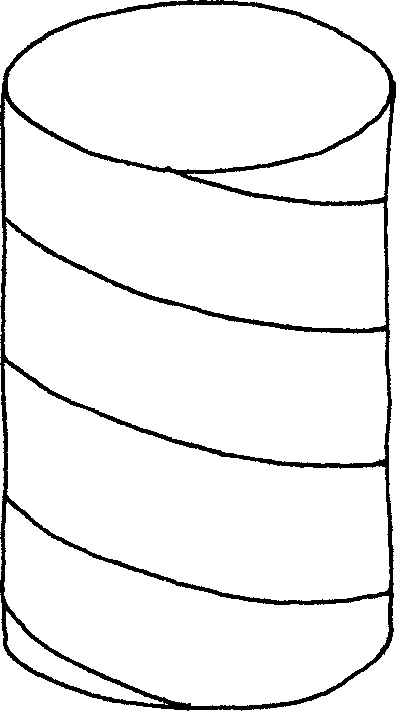
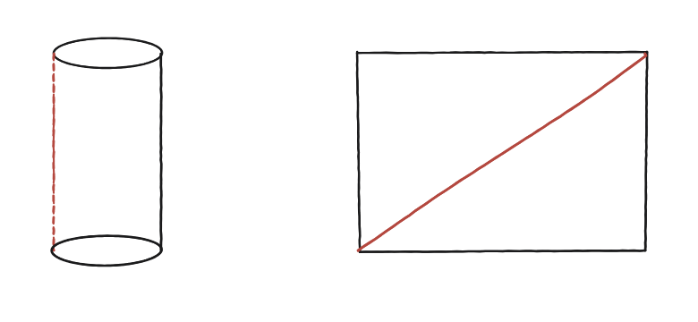
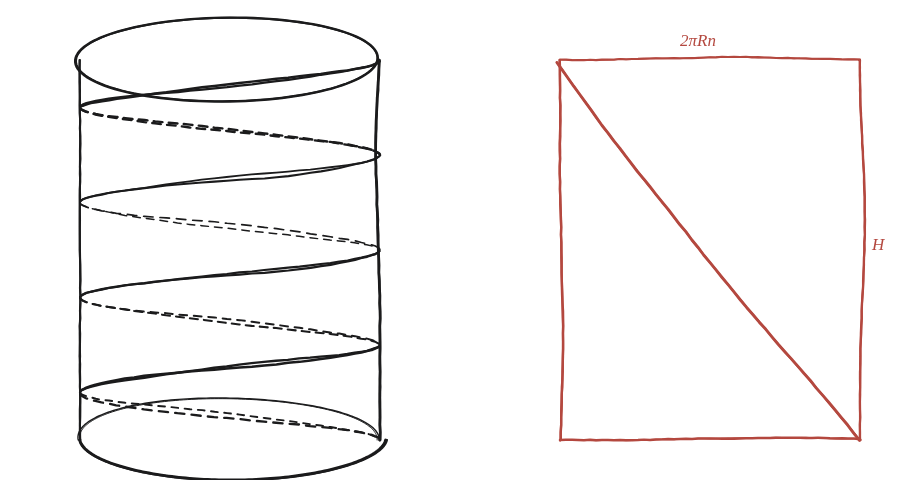

Com podem mesurar la longitud d'una hèlix?

Què hem de produir
Una fórmula per a la longitud d'una hèlix que fa n voltes senceres al voltant d'un cilindre de radi R, mentre puja una alçada total H —sense haver de sumar infinits trossets de corba.
"Desenrotlla" el cilindre
Imagina el cilindre com un full de paper enrotllat. Si es desenrotlla —es retalla per una línia vertical i s'estira pla—, l'hèlix dibuixada a sobre es converteix en quina mena de línia, sobre el rectangle pla resultant?

La construcció
El cas real, amb 4 voltes: el cilindre amb l'hèlix dibuixada a sobre, i al costat, en sanguina, el mateix cilindre desenrotllat en un rectangle pla amb la línia recta corresponent.

Tancar-ho
Un cop desenrotllat, el rectangle té amplada igual al perímetre del cilindre multiplicat per n —la distància horitzontal total recorreguda en n voltes— i alçada H. L'hèlix es converteix en la diagonal d'aquest rectangle, una línia recta, i la seva longitud és, per Pitàgores, √((2πRn)² + H²).
La longitud d'una hèlix que fa n voltes al voltant d'un cilindre de radi R mentre puja una alçada H és √((2πRn)² + H²) —la diagonal del rectangle que resulta de desenrotllar el cilindre.
Comprovació
R=1, n=4 voltes, H=3: longitud = √((2π·4)²+9) = √(631,65+9) ≈ 25,31. Val la pena fer-ne, a més, dues comprovacions de sentit comú que no demanen calculadora. Si H=0, l'hèlix es converteix en el cercle recorregut 4 vegades, i la fórmula dona √((2π·4)²) = 2π·4, que és exactament això. Si R=0, el cilindre s'aprima fins a ser una recta i queda √(H²)=H, la pujada sencera. Una fórmula que passa els dos casos extrems difícilment s'equivoca al mig.
"Desenrotllar" una superfície corba per convertir un problema en un de pla és la mateixa idea ja feta servir a les Qüestions 45 (l'àrea d'un cilindre) i 51 (la d'un con). Aquí, en lloc d'una àrea, en surt la longitud d'una corba —i funciona pel mateix motiu: el cilindre es pot obrir i estendre pla sense estirar-lo enlloc, de manera que cap longitud dibuixada a sobre no canvia en desenrotllar-lo.